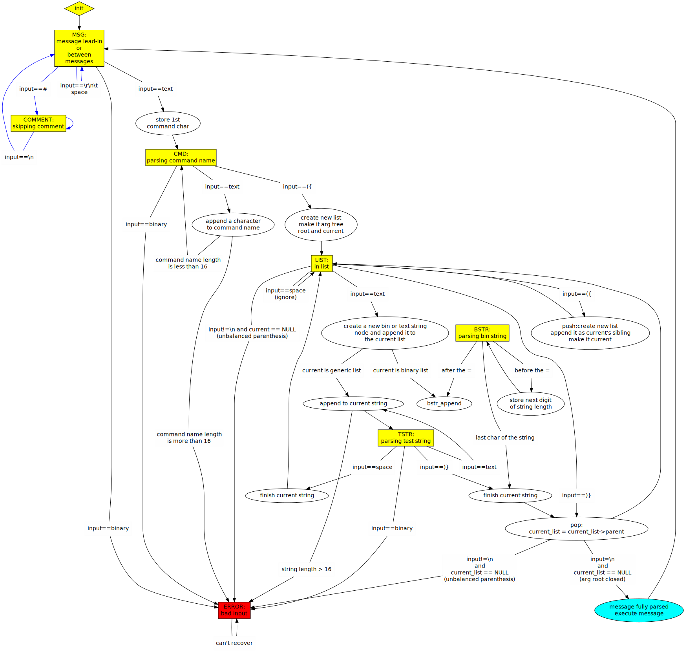

Protocol parser state machine of the referece implementation:

Legend:
- yellow boxes are states
- blue arrows are optional features for a more tolerant parser
- round nodes are actions that shall be taken
- arrow with text: execute aciton or switch state if condition is true
- arrow without text: do this if no other condition is met
Notes on the refernece implementation
The reference implementation builds a tree of nodes for the arguments.
Each node is either a list or a text. A node has a pointer to its parent, its
first child and its next sibling. While parsing list-of-lists, the parser
keeps a current node. A new node is either added as the last sibling of
the current node (new argument on a list) or as the first
child of the current node (first argument of a new list when the list is
open).
When a list is closed, the parent of the current node becomes the
new current node.
When parsing a new message, the current node is NULL until the argument list
is open; the new current node also becomes the argument tree root.
If the argument tree root is closed, a newline shall follow, because that's
how a message is terminated.
The binary string part of the state machine has 2 more internal
states:
- a boolean indicating whether we are parsing the length or the string (before or after the '=')
- an integer string length